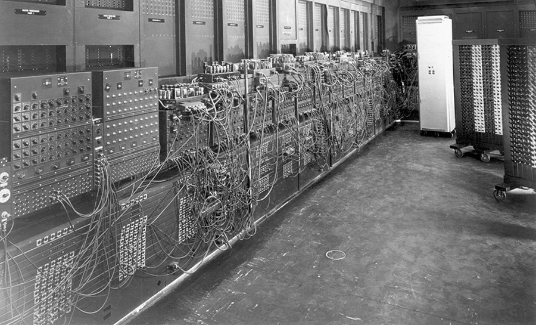

Эпоху достаточно примитивных компьютеров прерывают первые ЭВМ, создание которых началось с 30-х годов на основе электронных ламп и реле. Это были громоздкие, неудобные в использовании, но прогрессивные для своего времени, компьютеры. Цена такого изобретения кусалась, поэтому позволить себе приобрести такую "штуку" могли только крупные корпорации и правительства некоторых стран.
Кроме дороговизны, были у первых электронных компьютеров и другие недостатки:
Один из главных минусов ламповых компьютеров был как раз в этих самых лампах. Так как в одном устройстве их было порядка 15-30 тысяч, то, в случае поломки и необходимости замены, требовалось много времени и усилий, чтобы найти лампу и ее заменить.
